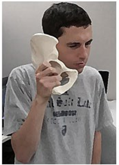

Hip and Leg Bones
In this section we will learn the bones, bone regions, and bony structures for the pelvis and legs. There a quite a few long bones in the legs. You may be required to tell right and left for the larger hip and leg bones. It is much harder to tell right and left for the foot bones and we are not going to require you to do that.
As before, it is recommended that you do your own independent internet image search and research to see various renditions of the bones and bony landmarks described below. It is helpful to see these as you read
Pelvis
Sacrum and Coccyx
You have learned the sacrum and coccyx last week. This week we will introduce the other bones of the pelvis, the Coxal Bones which are also called the Os Coxae.
Coxal Bones (Os Coxae)
The coxal bones or os coxae have also been called the hip bones, innominate bones, and pelvic bones. The right and left coxal bones join each other anteriorly and the sacrum posteriorly to form the pelvic girdle. Each coxal bone is actually made up of three smaller bones called the ilium, ischium, and pubis that are fused together. Many of the structures and bony landmarks found on the coxal bones are regions or areas that muscles attach to. To identify if a coxal bone is a right or left, position the bone so that the pubic symphysis is anterior and the acetabulum is lateral. Then, imagine what side of the body the bone would be on if you connected it to the other pubic symphysis of the other coxal bone. Many students will hold the os coxa like a phone. As long as your hand is in the greater sciatic notch in a way that the fingers cross into the acetabulum and the part that forms the pubic symphysis is where you would speak into, then the hand that the bone is in is the side that the bone belongs on.

Student Holding a right Os Coxa bone.
- Acetablum: The acetabulum is the socket of the hip joint to which the femur connects. You can see the fusion of the three bones that make up the coxal bone in the acetabulum.
- Anterior Inferior Iliac Spine: The anterior inferior iliac spine is an important attachment site for muscles.
- Anterior Superior Iliac Spine: The anterior superior iliac spine is the anterior ending of the iliac crest.
- Auricular Surface: The auricular surface is where the os coxae bones connect to the sacrum.
- Greater Sciatic Notch: The greater sciatic notch is where the sciatic nerve leaves the pelvis and enters the posterior thigh.
- Iliac Crest: The iliac crest is an important site for muscle attachment.
- Iliac Fossa: The iliac fossa is the large, concave surface on the internal surface of the ilium.
- Ilium: The ilium is the largest of the three bones that make up the os coxae. It is found in the superior area of the hip.
- Inferior Pubic Ramus: The inferior pubic ramus is the inferior border of the pubic bone.
- Ischial Ramus: The ischial ramus sits just anterior to the ischial tuberosity and is where the ischium connects to the pubis.
- Ischial Spine: The ischial spine is a pointed projection for muscle attachment.
- Ischial Tuberosity: The ischial tuberosity is where posterior thigh muscles attach and is the portion of the coxal bone on which a person sits.
- Ischium: The ischium is located at the posterior and inferior portion of the coxal bone.
- Lesser Sciatic Notch: The divot made by the lesser sciatic notch allows nerves and vessels to pass through the area more easily.
- Obturator Foramen: The obturator foramen is so named because it is occluded and covered by soft tissue in real life.
- Posterior Inferior Iliac Spine: The posterior inferior iliac spine serves as an attachment site for muscles and ligaments that support the joint between the coxal bone and the sacrum.
- Posterior Superior Iliac Spine: The posterior superior iliac spine is the posterior ending of the iliac crest.
- Pubic Crest: The pubic crest is a site for abdominal muscle attachment.
- Pubis: The pubis is located at the anterior and inferior portion of the coxal bone.
- Superior Pubic Ramus: The superior pubic ramus forms the upper edge of the obturator foramen.
- Symphysis Pubis: The symphysis pubis is where the two os coxa bones connect anteriorly.
Legs
Femur
The femur is the largest, heaviest, and strongest bone in the body. The length of the femur determines about a quarter of a persons height. Anthropologists who find partial remains of skeletons use this knowledge to estimate how tall a deceased person would have been. To identify a right or left femur, notice that the condyles on the distal end of the femur have a groove between them. On the anterior femur this groove is shallow because the patella glides there and makes contact with cartilage in the groove. On the posterior side the groove is quite deep. If you hold the femur so that the shallow groove is anterior, you can imagine which side of the pelvis the head of the femur would connect with.
- Body: The body of the femur is the cylindrical, long shaft in the middle of the bone.
- Fovea Capitis: The fovea capitis is a depression in the head of the femur that serves as an attachment site for a ligament that helps fasten it to the acetabulum.
- Gluteal Tuberosity: The gluteal tuberosity is the lateral ridge of the linea aspera that is the attachment site for the gluteus maximus muscle.
- Greater Trochanter: The greater trochanter is an attachment site for muscles that fasten the thigh to the hip. The greater trochanter and the muscles attached to it form a bulge that makes up the widest portion of the hip.
- Head: The head of the femur articulates with the acetabulum of the os coxae.
- Intercondylar Fossa: The intercondylar fossa is located posteriorly between the lateral and medial condyles.
- Intertrochanteric Crest: The intertrochanteric crest is a ridge on the posterior femur that transverses the area between the greater and lesser trochanters.
- Lateral Condyle: The lateral condyle is a smooth surface that articulates with the tibia.
- Lateral Epicondyle: The lateral epicondyle is an important attachment site for ligaments.
- Lesser Trochanter: The lesser trochanter is an attachment site for muscles that fasten the thigh to the hip.
- Linea Aspera: The linea aspera is a prominent ridge on the posterior shaft of the femur that provides an attachment site for muscles.
- Medial Condyle: The medial condyle is a smooth surface that articulates with the tibia.
- Medial Epicondyle: The medial epicondyle is an important attachment site for ligaments.
- Neck: The neck of the femur is the area between the head and the trochanters.
- Patellar Groove: The patellar groove is where the patella articulates with the femur.
Patella
The patella is also known as the kneecap. This bone protects the hyaline cartilage of the knee joint. It also acts as a fulcrum for the tendons of the quadriceps muscle to greatly increases the force that can be applied to the lower leg. To identify a right or left patella, turn the patella around so that you can look at the posterior surface and position the apex inferiorly. The posterior surface has two facets. These facets contain cartilage in a living person and glide along the cartilage in the shallow anterior groove between the condyles of the femur. The facet that glides with the lateral condyle of the femur is always bigger. So, once you discover which facet is bigger, imagine in your mind which leg the patella belongs to if the bigger facet is on the lateral side. In-person students sometimes hold the patella down over their own knees to imagine which leg puts the larger facet on the lateral side. Those who study online can imagine putting their own knee right up to the screen on the picture of the posterior surface.
- Anterior Surface: The anterior surface faces outward and is the portion of the kneecap that you can feel on the outside of your leg.
- Apex: The apex of the patella is the most inferior portion of the bone that attaches to a tendon that innervates with the lower leg muscles.
- Base: The base of the patella is the most superior portion of the bone that attaches to a tendon that innervates with the thigh muscles.
- Posterior Surface: The posterior surface is the area that faces inward and performs articulation with the bones of the knee joint.
- Lateral Articular Facet: The lateral articular facet articulates with the lateral condyle of the femur. It is the larger of the two facets.
- Medial Articular Facet: The medial articular facet articulates with the medial condyle of the femur. It is the smaller of the two facets.
Tibia
The tibia is paired with the fibula and together they make up the long bones of the lower leg. The tibia is the larger of the two that bears most of the weight. It is always on the medial side of the two bones. The tibia and fibula are connected to each other by a very strong fibrous membrane. This membrane has been removed in most skeletons and pictures used to teach anatomy, but it is there in a living person. To identify a right or left tibia, turn the tibia so that the tibial tuberosity is facing anterior. Then look for the medial malleolus which is always on the medial side of the leg. Ask yourself which side of the body the bone would have to be on to make the anterior facing tibia have a malleolus on the medial side of the leg.
- Anterior Crest: The anterior crest of the tibia forms the area we know as the shin.
- Fibular Notch: The fibular notch is the area where the tibia articulates with the fibula.
- Intercondylar Eminence: The intercondylar eminence is a ridge between the two articular surfaces of the proximal tibia. It is an attachment site for ligaments that stabilize the knee.
- Lateral Condyle: The lateral condyle of the tibia articulates with the lateral condyle of the femur.
- Medial Condyle: The medial condyle of the tibia articulates with the medial condyle of the femur.
- Medial Malleolus: The medial malleolus makes up the rounded bump on the inside of your ankle.
- Tibial Tuberosity: The tibial tuberosity is the attachment site for the ligament of the quadriceps femoris muscle groups. It can be seen and felt just below the patella.
Fibula
Because the fibula is always located on the lateral side of the tibia, it is always on the lateral side of the lower leg. It is much more slender than the tibia and does not carry nearly as much bodyweight.
- Head: The head of the fibula is the most proximal part of the fibula. It articulates with the tibia but not the femur.
- Lateral Malleolus: The lateral malleolus makes up the outside rounded bump of your ankle and completes the bony containment of the ankle joint.
Tarsal Bones
Tarsal comes from the Greek root tarsus which refers to the ankle. There are seven articulating tarsal bones. It is often easier to memorize the seven tarsal bones by coming up with a mnemonic device. Taking the first letter of each tarsal bone in the list order gives you the string of letters T-C-N-M-I-L-C that can be used in a sentence like: Thin Country Nerds Meet Incredible Lovely Cuties.
- Talus: The talus articulates with the tibia and fibula to make up the ankle joint.
- Calcaneus: The word calcaneus comes from a Latin word that means bone of the heel. The calcaneus makes up the heel and is the largest and strongest bone in the foot. It is the attachment site for large calf muscles.
- Navicular: The navicular is so named because it is boat shaped.
- Medial Cuneiform: The medial cuneiform is found closer to the midline of the body and is so named because it resembles the wedge-shaped characters used in ancient cuneiform writing systems.
- Intermediate Cuneiform: The intermediate cuneiform is found just lateral of the medial cuneiform and is so named because it resembles the wedge-shaped characters used in ancient cuneiform writing systems.
- Lateral Cuneiform: The lateral cuneiform is found the most lateral of the three cuneiform bones and is so named because it resembles the wedge-shaped characters used in ancient cuneiform writing systems.
- Cuboid: The cuboid is gets its name because it is cube shaped.
- Sesamoids: The sesamoids of the foot are not tarsals. They are accessory bones that do not fit well in a category with any of the other bones of the foot. A sesamoid bone is a bone embedded in tendon or muscle. In a typical foot, the sesamoids are two pea-shaped bones located in the ball of the foot beneath the joint of the big toe. They act as a pulley for tendons to provide leverage and help the big toe move normally.
Metatarsals
Meta- means between or in the middle. The metatarsals are the bones found in the intermediate foot between the tarsal bones and the digits. There are 5 metatarsals, one for each digit of the foot. The first metatarsal is the one that underlies the digit of the big toe and the 5th underlies the little toe.
Digits (Phalanges)
Similar to the hand, the foot has digits known as the toes that are made up of smaller bones called phalanges. Digit 1 is the big toe and digit 5 is the little toe. Starting at the tip of the 4 smaller toes and moving proximally, the bones include the distal, middle, and proximal phalanx. The big toe doesn’t have a middle phalanx, only the proximal and distal phalanx.